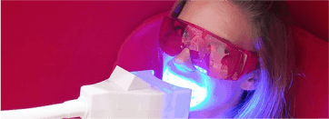

Белоснежная улыбка сегодня доступна для каждого из нас, благодаря
методу косметического осветления зубов PEARLSMILE®!
Инновационная технология PEARLSMILE®
Метод косметического осветления зубов PEARLSMILE основан на применение геля, содержание пероксида в котором не превышает 0,1% и активизирующей светодиодной лампы холодного света. Эта комбинация позволяет осветлять зубы бережно и безболезненно, также эта прцедура подходит обладателям чувствительных зубов.
Процесс отбеливания.
Шаг первый | 1

Консультант замеряет исходный тон зубов.
Шаг второй | 2
Наносится гель на индивидуальную каппу, затем каппа одевается на зубы
Шаг третий | 3
Включается лампа минимально на 23 минуты.
Шаг четвертый | 4
Сравните исходный и приобретенный тон зубов!
Часто задаваемые вопросы.
Как действует осветляющий гель?
Активные осветляющие компоненты геля pearlsmile активизируются с помощью лампы холодного света и обесцвечивают органические пигментирующие вещества в зубной эмали. Гель не нарушает кислотного баланса и не обезвоживает денту. Холодный свет лампы не раздражает десна, поэтому процедура гарантированно безболезненна и не имеет побочных эффектов.
Есть ли противопоказания к процедуре?
Исследования показали, что косметическое осветление зубов абсолютно безопасно. Однако в силу этических норм, проводить процедуру осветления зубов не рекомендуется в переод беременности и кормления. Так же стоит учитывать, что во время процедуры не оказывается никакого воздействия на искусственные зубы.
На что следует обратить внимание после проведения процедуры?
Действие геля продолжается в течении 2 часов после окончания процедуры. В течении этого времени не рекомендуется, курить, употреблять еду и напитки, кроме воды. А также следующие 2 дня после процедуры рекомендуем избегать напитков и продуктов, провоцирующих пегментацию зубов.
Как часто можно повторять процедуру?
Услуга косметического осветления зубов не имеет ограничений в интервалах между процедурами. Вы можете постоянно иметь ухоженную белоснежную улыбку, воспользовавшись услугой в любой важный для вас момент, будь то свадьба, свидание или собеседование.
Сколько месяцев сохраняется результат?
Результат сохраняется в течении 3-6 месяцев. Во многом это зависит от вашего образа жизни. Для достижения более длительного результата рекомендуем воздержаться от курения и использовать жемчужную пудру PEARLSHINE утром и вечером.